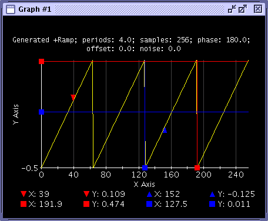
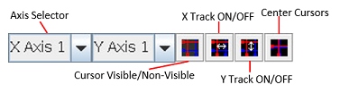

Cursors
Four cursors can be set up for the X and Y axis using the cursor functions in the Tool Bar. The cursors include the following:
- X Reference Cursor
- X Measure Cursor
- Y Reference Cursor
- Y Measure Cursor
The "X" cursors are represented by vertical lines in a graph; the "Y" cursors are represented by horizontal lines in a graph as shown in the following screen. The cursor positions are displayed at the bottom of the panel.

The functions that enable cursors are found in the Tool Bar.

Axis Selector (X Axis ID) - If the focused Data Display Panel has multiple x-axes, you need to specify on which x-axis the cursors are placed. The positions of "X Reference Cursor" and "X Measure Cursor" are displayed based on the specified axis ID.
Axis Selector (Y Axis ID) - If the focused Data Display Panel has multiple y-axes, the users need to specify which y-axis the cursors are put on. The positions of "Y Reference Cursor" and "Y Measure Cursor" are displayed based on the specified axis ID.
Cursor Visible/Non-visible - Make the cursors visible or non-visible using this button.
X Track Mode - If the "X Track Mode" is on, the "X Reference Cursor" and "X Measure Cursor" will be synchronized. This means the width between these cursors becomes constant all the time.
Y Track Mode - If the "Y Track Mode" is on, the "Y Reference Cursor" and "Y Measure Cursor" will be synchronized. This means the width between these cursors becomes constant all the time.
Center Cursor - This button allows you to move the cursors at the center of graph.